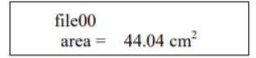

1. Đo diện tích, chiều dài, chiều rộng,chu vi và tính toán hệ số hình dạng và tỷ lệ khung hình
2. Không phá hủy mẫu và linh hoạt
3. Làm phẳng các lá cong để cung cấp các phép đo chính xác
4. Độ phân giải 0,01 cm2
5 Lưu trữ lên đến 8.000 phép đo đơn lẻ
Thiết bị nhẹ và khép kín với bộ ghi dữ liệu tích hợp và màn hình LCD
6. Pin bên trong có thể sạc lại
7. Cổng USB truyền dữ liệu sang máy tính và sạc thiết bị
8. Không cần hiệu chuẩn
9. Bao gồm phần mềm giao tiếp, hướng dẫn vận hành và hộp đựng vỏ cứng
Để đo một chiếc lá, hãy nhấc tấm phim trong suốt lên, đặt chiếc lá lên bảng màu, đặt tấm phim trong suốt lên chiếc lá và trượt máy quét laze lên bảng. Ấn ‘SAVE” để lưu kết quả (nếu không đặt chế dộ Auto-Save. CI-202 cho kết quả tức thì cho các phép đo diện tích lá, chiều dài, chiều rộng, chu vi, tỷ lệ và yếu tố hình dạng.
Trong chế độ đo, dòng trên cùng của màn hình sẽ hiển thị từ "Measure" ở bên trái và tên của một tập tin bên phải. Dòng dưới cùng của màn hình sẽ có từ “start” trong dấu ngoặc ở bên trái và bốn các mũi tên hướng bên phải.
Để bắt đầu đo, nhấn phím enter hoặc phím bắt đầu. Điều này bắt đầu quá trình đo lường. Động cơ sẽ bắt đầu quay đến tốc độ ngay sau khi nhấn nút và màn hình sẽ hiển thị “Stabilizing”, sau đó “Spinning Up”, sau đó “Measuring”. Tại thời điểm này, di chuyển đầu quét xuống bảng quét. Khi đầu đã được rút ra hoàn toàn, thiết bị sẽ tự động dừng và hiển thị kết quả của đo đạc. Tại thời điểm này, hãy xem trước kết quả và quyết định xem nó có nên được lưu hay không và lưu vào tệp nào nên được lưu vào. Phím enter sẽ làm cho máy quét khởi động và sau đó thiết bị sẽ khởi động đo lường; nếu chuyển động không được phát hiện trong vòng vài giây, máy quét sẽ tắt. Phím start thực hiện điều tương tự, nhưng nếu nó được nhấn xuống, máy quét sẽ tiếp tục quay cho đến khi bạn sẵn sàng đo.

Màn hình sẽ hiển thị tên của tệp hiện tại ở góc trên bên trái của màn hình, tham số tên ở góc dưới bên trái và giá trị tham số ở góc dưới bên phải màn hình.
Để hiển thị một tham số khác, hãy nhấn phím mũi tên PHẢI → hoặc TRÁI ←. Liên tục nhấn phải phím mũi tên → sẽ đưa bạn qua diện tích, chiều dài, chiều rộng, chu vi, tỷ lệ khung hình và yếu tố hình dạng, theo thứ tự đó.
Chỉ các thông số có thể được lưu vào tệp hiện tại mới được hiển thị. Nếu các thay đổi được yêu cầu trước khi có dữ liệu đã lưu,
sử dụng các phím mũi tên lên và xuống ⇅ để xem qua các tệp. Để hủy phép đo, hãy nhấn nút STOP.
Một phép đo khác có thể được thực hiện vào lúc này, nếu được yêu cầu.
Tùy thuộc vào việc thiết lập chức năng lưu tự động của thiết bị phép đo sẽ hoặc không được lưu.
Các tùy chọn:
- để chọn một chế độ khác bằng các phím mũi tên lên hoặc xuống ⇅
+ để chọn một tệp (nếu có nhiều tệp) bằng các phím mũi tên phải hoặc trái
+ để xem thời lượng pin
+ để xem điện áp
- bắt đầu quá trình xem bằng cách nhấn nút START / ENTER